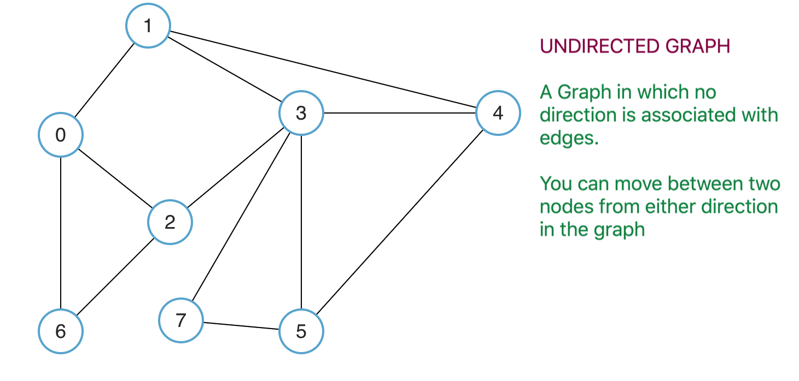
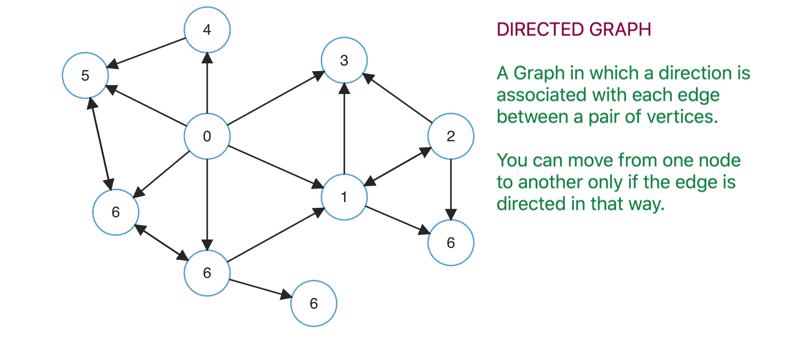

Definition :
A graph is a non-linear kind of data structure made up of nodes or vertices and edges. The edges connect any two nodes in the graph, and the nodes are also known as vertices. It is a pictorial representation of a set of objects where some pairs of objects are connected by links.
Types of Graphs :
There are 2 types of graphs :
1) Directed Graphs.
2) Undirected Graphs.
Undirected Graphs :

Directed Graphs :

Use of Graphs :
Graphs are used to represent and solve problems where the data consists of objects and relationships between them, such as:
Social Networks: Each person is a vertex, and relationships (like friendships) are the edges. Algorithms can suggest potential friends.
Maps and Navigation: Locations, like a town or bus stops, are stored as vertices, and roads are stored as edges. Algorithms can find the shortest route between two locations when stored as a Graph.
Internet: Can be represented as a Graph, with web pages as vertices and hyperlinks as edges.
Biology: Graphs can model systems like neural networks or the spread of diseases
Advantages of Graphs :
Representing complex data : Graphs are effective tools for representing complex data, especially when the relationships between the data points are not straightforward. They can help to uncover patterns, trends, and insights that may be difficult to see using other methods.
Path finding : Graphs can be used to find the shortest path between two points, which is a common problem in computer science, logistics, and transportation planning.
Visualization : Graphs are highly visual, making it easy to communicate complex data and relationships in a clear and concise way. This makes them useful for presentations, reports, and data analysis.
Disadvantages of Graphs :
Difficulty in interpretation : Graphs can be difficult to interpret, especially if they are large or complex. This can make it challenging to extract meaningful insights from the data, and may require advanced analytical techniques or domain expertise.
Scalability issues : As the number of nodes and edges in a graph increases, the processing time and memory required to analyze it also increases. This can make it difficult to work with large or complex graphs.
Lack of standardization : There are many different types of graphs, and each has its own strengths and weaknesses. This can make it difficult to compare graphs from different sources, or to choose the best type of graph for a given analysis.